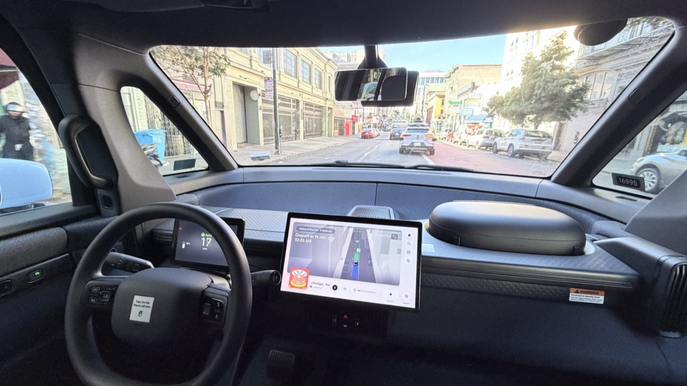
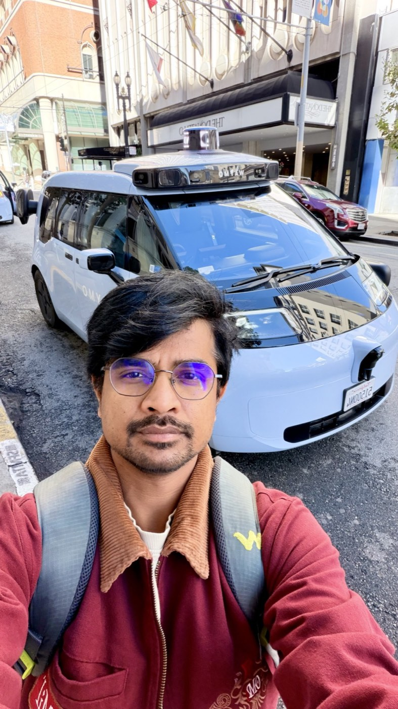
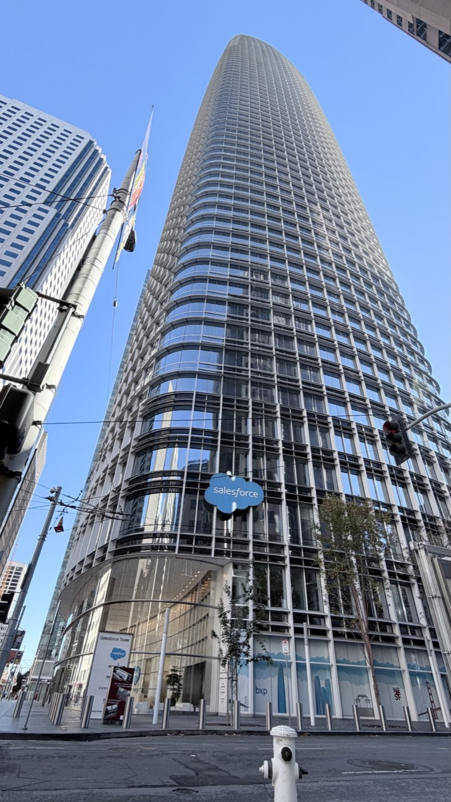
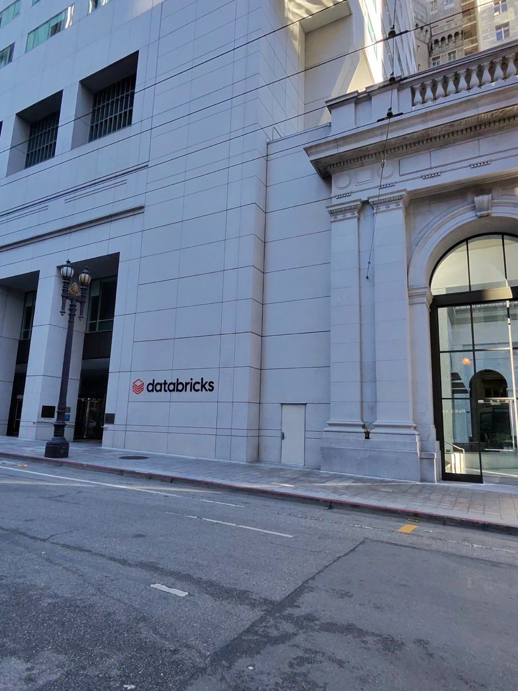
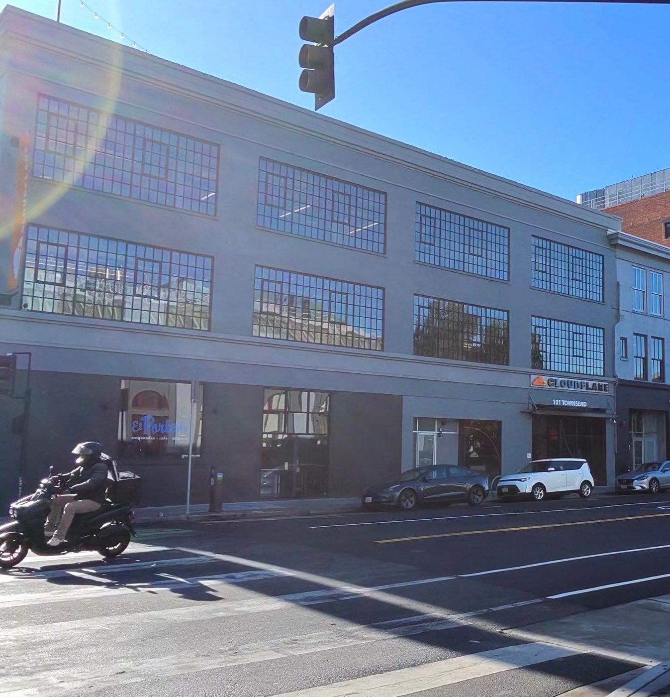
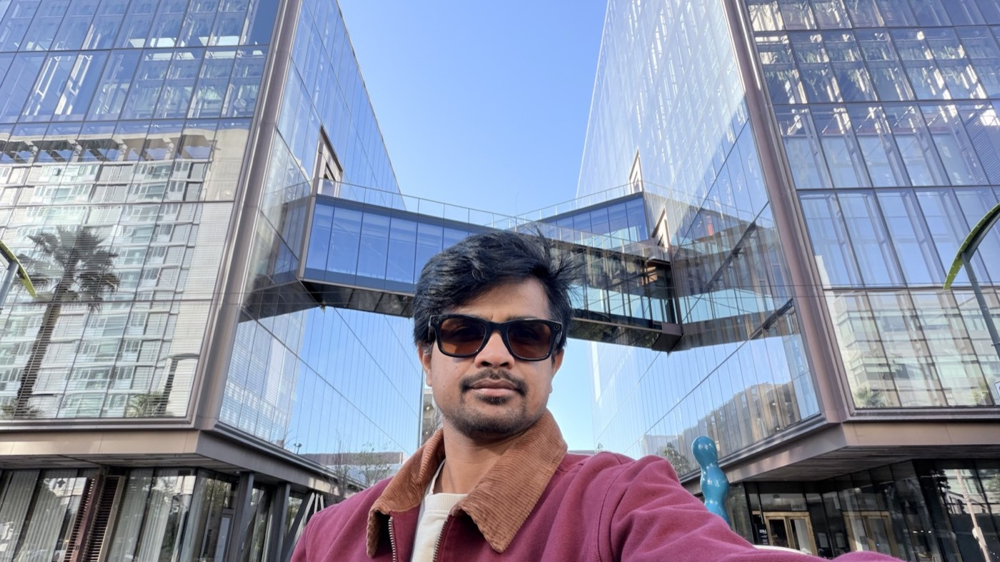
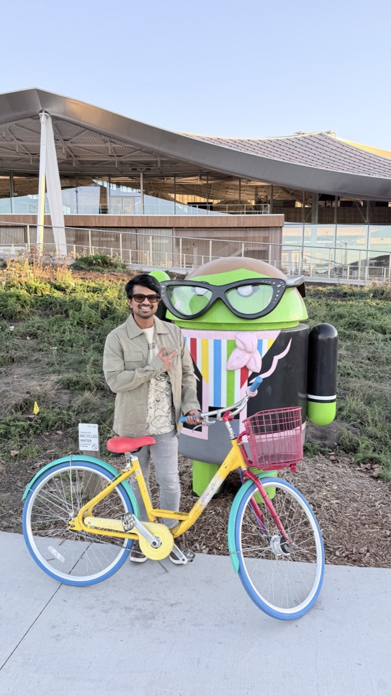
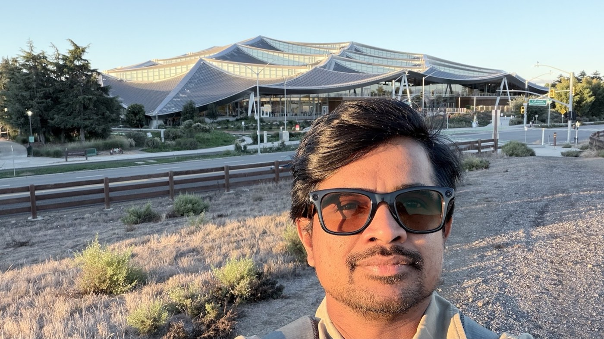
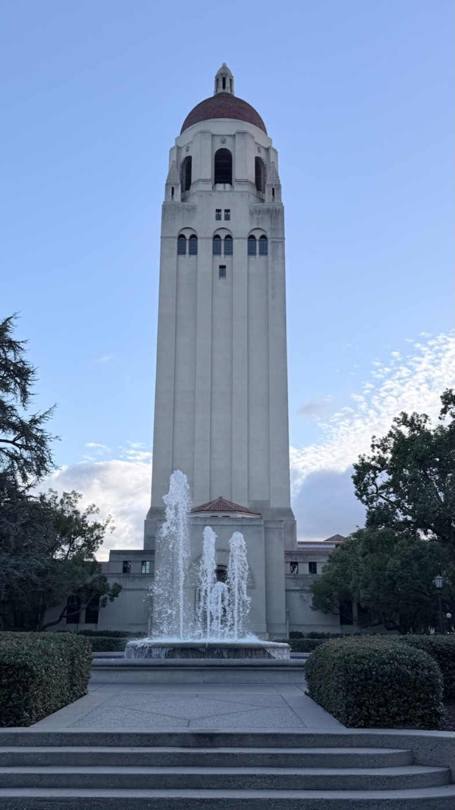

I interact with technology all day. Google is part of how I search, navigate, build and learn. Cloudflare, Databricks, Snowflake and Salesforce are familiar names in almost every technologist's world. OpenAI and Anthropic are changing how I think about software itself. Their tools appear in browser tabs, architecture conversations, experiments and everyday work.
In San Francisco, those familiar names stopped feeling like distant logos. They had streets, buildings and neighborhoods attached to them. Even when I was only looking at an office from outside, the experience created an unexpected connection between my daily digital life and a physical place.
I was not discovering these companies for the first time. I was meeting, in the real world, the technology that already occupies so much of my curiosity.
Waymo turned curiosity into amazement
My Waymo ride was the experience that changed the temperature of the trip. I expected it to be interesting. I did not expect it to feel so natural.
The ride was almost flawless. More importantly, the system appeared prepared for the edge cases we encountered. It moved through real San Francisco streets with a calmness that made the extraordinary begin to feel ordinary. There was no dramatic moment announcing that the future had arrived. The car simply handled the journey.
As an engineer, that was the most impressive part. A polished autonomous ride is not one clever model performing in isolation. It is perception, planning, mapping, safety, infrastructure, product design and countless decisions working together. The experience made me appreciate the depth of engineering required to turn years of research into something a person can comfortably use.


I left the ride more excited than when I entered it. It strengthened my determination to visit Google's campus the next day—to see another place connected to technology that has shaped so much of my life.
The tools of everyday engineering had addresses
Walking through San Francisco, I kept encountering names that feel familiar to anyone who works in technology. Salesforce Tower is part of the city's skyline. Databricks and Snowflake represent the data platforms behind modern analytics and AI. Cloudflare sits behind an enormous amount of the internet that most people use without ever seeing it.
Cloudflare created an especially immediate connection for me. I had recently been impressed by how easily its tooling can expose an idea running on a local computer to the wider world. I wrote about that feeling in Localhost Is No Longer Local: a tunnel may sound like infrastructure, but it can give an individual builder a fast path from a laptop experiment to something another person can experience.
Seeing the Cloudflare office instantly brought that thought back. The building was not merely a company location; it represented a tool that had already changed what felt possible for me as a builder.




The AI labs were strikingly low profile
Visiting the buildings associated with OpenAI and Anthropic created another kind of surprise. These companies are at the center of a global conversation, yet their physical presence did not announce itself with the huge signs I had imagined. The buildings I saw were deliberately understated.
That contrast stayed with me. The work inside these organizations influences products, careers, investments and public debate around the world, while the exterior can blend into an ordinary city block. It was a reminder that some of the biggest changes in technology do not begin with a monument. They begin inside rooms where people are trying to solve problems that still have no settled answers.
I also felt the tension that belongs beside the excitement. AI brings questions about trust, employment, safety, power and who benefits. My enthusiasm is not a belief that every development is automatically good. It is a desire to understand the technology closely enough to participate responsibly in what it becomes.
Google the next day felt almost surreal
The next day, visiting Google's Mountain View campus felt like following the Waymo experience back toward one of its sources. Google has been present throughout my technical life—search, Android, maps, cloud platforms, developer tools and AI. Being on the campus turned that long digital familiarity into something personal.
The playful details made the experience memorable from the beginning. I could play Chrome's offline dinosaur game with a physical joystick: a tiny browser joke I had known for years suddenly turned into an installation I could stand in front of and use. Around it were Android characters, colorful bicycles and the familiar visual language of Google translated into a physical environment.

Then there was Bay View itself: an ambitious campus that looks as if its roof is moving. Ending the visit near Shoreline Lake at sunset gave the day an entirely different rhythm. The technology was inspiring, but so was the balance—the sense that a place built around large technical ambitions could still open toward water, walking paths and a quiet evening sky.

Stanford felt like returning to the foundations
I ended this part of the trip at Stanford. After experiencing products and seeing the companies building them, visiting the university felt like stepping back toward the foundations: research, teaching, experimentation and generations of people being encouraged to ask questions before the answers are obvious.
Not every innovation in the Bay Area begins at Stanford, of course. But the campus represents something essential about the region—the connection between learning and building, and the belief that an idea explored deeply can eventually reshape the real world.

The next trip already has a list
This journey did not satisfy my curiosity; it expanded it. NVIDIA, Meta and Apple Park are already on my list for the next visit. I want to keep connecting the products and platforms I use with the places, people and ideas behind them.
The most valuable thing I brought home was renewed momentum. Seeing ambitious technology up close shrank the imaginary distance between “the people building the future” and everyone else who has an idea worth trying.
The future stopped feeling like something I only read about. For a few days, it felt close enough to ride in, walk around and learn from.
San Francisco did not make me enthusiastic about technology for the first time. It reminded me how deep that enthusiasm already runs—and made me want to build more.